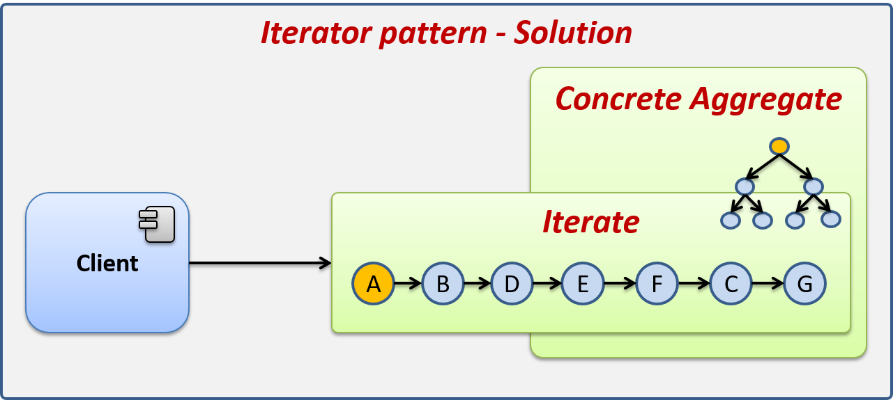

Iterator
Patr칩n de dise침o de comportamiento
Este patr칩n de dise침o permite recorrer una estructura de datos sin que sea necesario conocer la estructura interna de la misma. Es especialmente 칰til cuando trabajamos con estructuras de datos complejas, ya que nos permite recorrer sus elementos mediante un Iterador, el Iterador es una interface que proporciona los m칠todos necesarios para recorrer los elementos de la estructura de datos, los m칠todos m치s comunes son:
- hasNext: M칠todo que regresa un booleano para indicar si existen m치s elementos en la estructura por recorrer. True si existen m치s y false si hemos llegado al final y no hay m치s elementos por recorrer.
- next: Regresa el siguiente elemento de la estructura de datos.

Estructura del patr칩n de dise침o iterator.
Los elementos del patr칩n Iterator se describen a continuaci칩n:
- Client: Actor que utiliza al Iterator.
- Aggregate: Interface que define la estructura de las clases que pueden ser iteradas.
- ConcreteAggregate: Clase que contiene la estructura de datos que deseamos iterar.
- IIterator: Interface que define la estructura de los iteradores, la cual define los m칠todos necesarios para poder realizar la iteraci칩n sobre el ConcreteAggregator.
- ConcreteIterator: Implementaci칩n de un iterador concreto, el cual hereda de IIterator para implementar de forma concreta c칩mo iterar un ConcreteAggregate.

Diagrama de secuencia del patr칩n Iterator.
- El cliente solicita al ConcreteAggregate la creaci칩n de un iterador.
- El ConcreteAggregate crea un nuevo Iterador.
- El cliente, para recorrer los elementos, entra en un ciclo hasta que no existen m치s elementos en el iterador, el m칠todo hasNext le indicar치 cu치ndo se ha llegado al final.
- El cliente solicita el siguiente elemento al iterador mediante el m칠todo next.
- Si existen m치s elementos nos regresamos al paso tres, esto se repite hasta finalizar el recorrido.
Ejemplo del mundo real
Mediante la implementaci칩n del patr칩n de dise침o Iterator crearemos una aplicaci칩n que nos permita recorrer una estructura organizacional jer치rquica, mediante la implementaci칩n de un iterador, el cual nos permitir치 recorrer todo el 치rbol de la estructura de forma secuencial.
Descubre como el patr칩n Iterator nos ayuda a resolver este problema